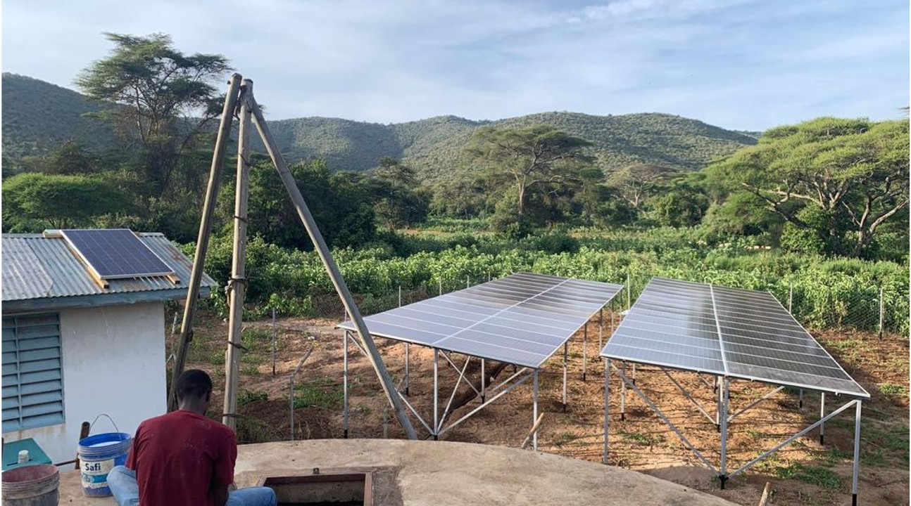
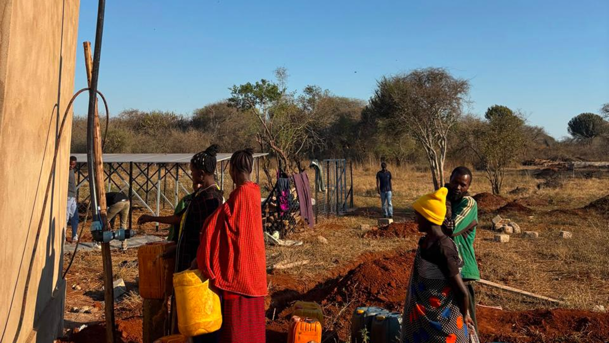

Services
Smart Solar Boreholes
Accessible, clean and reliable water. We replace costly diesel generators with solar power, upgrade old and non-functioning boreholes, and contract local water agents to keep them running.
The challenge
Boreholes That Struggle to Keep Running
Thousands of existing boreholes in Tanzania struggle to stay in operation. Diesel running costs keep rising, there is little capital for repairs and upgrades, and too little focus on long-term operation and maintenance.
Many water points already exist but are broken or too expensive to run. Fixing and solarising them brings water back to communities at a fraction of the cost of drilling new ones.

Our solution
Solarise, Upgrade and Monitor
Solarise
Replace the diesel generator with solar power. Running costs fall, emissions from pumping are removed, and there is no more fuel to buy and transport.
Repair and upgrade
Bring old and non-functioning boreholes back into service, transforming performance of existing facilities at low cost.
Monitor and control
Monitor operations remotely, use the data to troubleshoot quickly, and manage payment through pre-paid control.
Results
What Changes After Solarisation
Results recorded at our solarised borehole sites.
After switching from diesel to solar
With no more overnight queueing for water
To the nearest water source
Compared with diesel, over 20 years
Reliable pumping also means steady income and secure jobs for the people who run the water point.
How it works
Build, Operate, Transfer
A model designed so that boreholes keep working long after installation.
1. Build
We install the solar system alongside any repairs and upgrades the borehole needs.
2. Operate
A water agent is hired from the local community and trained in operation and maintenance. Water is sold on a pre-paid basis, which keeps the site running and reduces the risk of missed payments.
3. Transfer
Once the investment is recovered, the assets are transferred to the community, with stronger management in place.
Technology
Smart Monitoring and Control
Our in-house monitoring and control device was developed through years of on-the-ground experience at rural water points. It gives a full picture of how each system is performing.
- Real-time online data and remote troubleshooting
- Works offline in remote areas, with local data logging
- Pre-paid unlock based on time, energy or water used
- Compatible across different inverter brands
Is your borehole a good fit?
Typical Site Characteristics
Smart Solar Boreholes work across a range of sizes. These are typical small and large sites.
| Small site | Large site | |
|---|---|---|
| Population within 5 km | 2,000 | 5,000 |
| Borehole flow rate | 5 m³/hr | 15 m³/hr |
| Pump size | 4 kW | 7.5 kW |
| Livestock watered daily | 1,500 | 3,000 |
Running a diesel borehole, or have one that has stopped working? Send us the pump size, flow rate and current fuel use and we will tell you what solar could save.
More than water
Power That Supports Livelihoods
Solar at a borehole site can power more than the pump. Services commonly added at our sites include:
- Maize milling and agri-processing
- Irrigated farming and fish farming
- Fridges and freezers
- Phone, torch and radio charging
- Small businesses such as salons

Get a Solar Quote
Please get in touch to discuss your project needs: commercial solar, hybrid power, solar boreholes or diesel displacement anywhere in Tanzania.